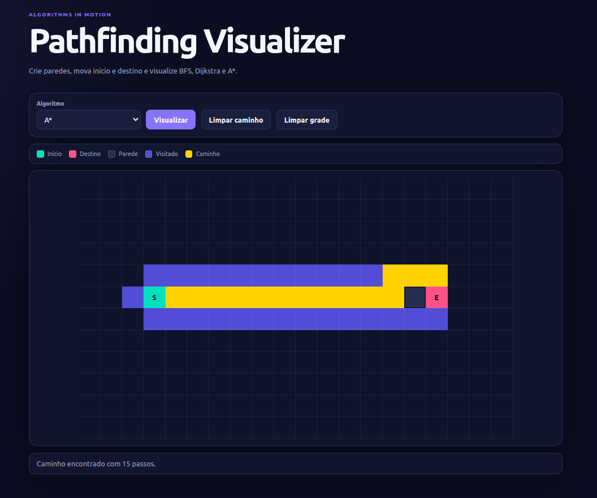

Pathfinding Visualizer

JavaScript / Algorithms
TYPE: Personal Project
CODE: GitHub
Pathfinding Visualizer is an interactive grid-based project built with vanilla HTML, CSS, and JavaScript. It lets users create walls, drag the start and destination nodes, choose between Breadth-First Search, Dijkstra, and A*, and watch each algorithm explore the grid before highlighting the final path.
Concepts
Graph Traversal
BFS
Dijkstra
A*
Manhattan Heuristic
DOM Manipulation
Tools
HTML
CSS
JavaScript
Git
GitHub
Technical Overview
The application generates a 20 × 12 interactive grid in JavaScript. Each cell is represented as a node that stores its coordinates and current state, including whether it is a wall, the start node, the destination node, or part of the search result.
The visualizer implements Breadth-First Search, Dijkstra's algorithm, and A*. All three algorithms explore neighboring cells while ignoring walls and store a reference to the previous node so the final route can be reconstructed after the destination is reached.
A* also calculates the Manhattan distance between each node and the destination, combining the traveled distance with this heuristic to prioritize which nodes should be explored next.
The search process is animated directly through DOM updates and CSS classes. Visited nodes appear progressively, followed by a separate animation for the final path.
Main Features
• Interactive 20 × 12 grid.
• Click-and-drag wall creation and removal.
• Draggable start and destination nodes.
• Breadth-First Search visualization.
• Dijkstra's algorithm visualization.
• A* visualization using Manhattan distance as its heuristic.
• Separate animations for explored nodes and the final path.
• Controls for clearing only the path or resetting the entire grid.
• Responsive interface for different screen sizes.
Application Flow
The user first edits the grid by drawing walls and, if desired, repositioning the start and destination nodes. The chosen algorithm can then be selected from the toolbar.
When visualization begins, the previous search state is cleared while the walls remain intact. The selected algorithm returns the nodes it visited and reconstructs the path from the destination back to the starting point.
The interface then animates each visited node in sequence. If a route exists, the final path is animated afterward and the number of steps is displayed. If no route is possible, the interface reports that no path was found.
Challenges
• Representing the visual grid as JavaScript node objects while keeping the interface synchronized with each node's state.
• Implementing three algorithms with different search strategies while using the same grid and path reconstruction logic.
• Managing drag interactions for walls and the start/end nodes without allowing invalid states.
• Preserving walls when clearing a completed search while still resetting distances, heuristic values, visited states, and previous-node references.
• Coordinating asynchronous animations while temporarily disabling the controls to prevent conflicting user actions.
What I Learned
• I strengthened my understanding of graph traversal and shortest-path algorithms by translating them into an interactive visual interface.
• I practiced implementing BFS with a queue, Dijkstra with distance updates, and A* with a heuristic-based priority score.
• I gained more experience modeling application state with JavaScript objects and keeping that state synchronized with DOM elements.
• I learned how to reconstruct a route through previous-node references instead of storing every possible path during the search.
• I improved my understanding of asynchronous UI animation and user interaction management without relying on a front-end framework.
Future Improvements
• Maze generation.
• Adjustable visualization speed.
• Depth-First Search and Greedy Best-First Search.
• Weighted cells and additional pathfinding scenarios.
• Execution statistics for comparing the algorithms.
